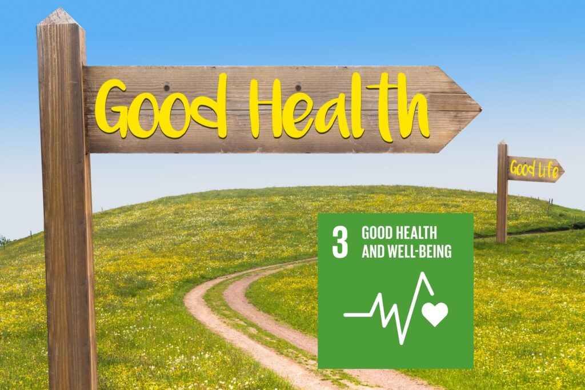

Core Values
P R I M A
Passionate, Resilient, Innovative, Motivated, and AdaptiveSelf Symbol

AN ARCHER RIDING A LION
The arrow represents the goals or targets I aim for, and it is also symbolized as the tool to achieve those goals. The lion represents my support system, environment, and foundation that I have to grow and reach my goals. A strong lion signifies the strong determination I possess to stride towards my objectives.
The aspect of resilience that I discovered is embodied in the concept of being determined. Determination means having a strong commitment to goals, vision, and beliefs in order to achieve them. In my experience, whenever I want to accomplish something or reach a target, I always meticulously plan the steps I need to take. I find it challenging to proceed without setting clear objectives beforehand. Additionally, I prioritize time management as it is key executing the plans I've laid out.
As someone with an investigative nature, I am always eager to understand the root causes of complex issues, willing to step beyond boundaries, and unafraid to try even when success seems unlikely. I also enjoy exploring to discover things are beneficial and align with my goals. This exploratory nature allows me to become more familiar with my surroundings, break through limits, and gain a broader perspective of the world. Furthermore, I have a strong support system, or a sturdy plan, that enables me to pursue the goals I set for myself.
Skills
Embedded System
85%
2
Certificates
6
Projects
Control Systems
82%
1
Certificate
4
Projects
Programming C and Python
92%
14
Certificatesk
16
Projects
PCB Prototyping
87%
3
Certificates
8
Projects
Electronic and Power
90%
2
Certificates
6
Projects
Engineering Drawing
75%
1
Certificate
3
Projects
Leadership and Planning
85%
2
Organizations Leader
3
Projects Leader
Critical Thinking
90%
2
Organizations
3
Projects
Communication Skill
80%
5
Event
3
Projects
I am eager to
I do awesome contribution for
Accelerating sustainable development goals.

SDG 3: GOOD HEALTH AND WELL-BEING
My mission is to play a pivotal role in advancing sustainable development goals by focusing on SDG 3, particularly in health research. Through projects like developing Electrical Impedance Tomography for detecting conditions like GERD, tumors, and cancer, I aim to contribute significantly to healthcare innovation. Additionally, I am dedicated to furthering research in the biomedical sector, working on solutions that improve medical diagnostics and treatments for a healthier future.

SDG 4: QUALITY EDUCATION
Engage in educational initiatives that enhance the quality and accessibility of education, especially in remote or underserved regions. I achieve this by supporting the creation of innovative learning programs, offering training and mentorship, and sharing expertise in educational technology.
SDG 7: AFFORDABLE AND CLEAN ENERGY
Participating in SDG 7, my focus is on researching electric vehicles to advance clean energy solutions. Additionally, I lead campaigns aimed at enhancing public awareness regarding the benefits of clean energy adoption. Through these efforts, I strive to promote sustainable practices and contribute positively to global energy conservation goals.
SDG 9: INDUSTRY, INNOVATIVE, AND INFRASTRUCTURE
Participating in SDG 9, I engage in diverse research endeavors focusing on innovation, including autonomous excavator technology and robotics. These initiatives aim to inspire people towards innovation, ultimately enhancing the quality of life by making tasks more efficient and accessible. By championing technological advancements, I strive to contribute to SDG 9's goal of building resilient infrastructure, promoting inclusive and sustainable industrialization, and fostering innovation.
Electric Vehicle Research Team
As a college student, I am deeply involved in vehicle propulsion control, battery management, and power systems, all aimed at advancing sustainable development goals, particularly SDG 7. Through this research, I am contributing to the development of eco-friendly transportation solutions that align with global efforts to reduce carbon emissions and promote renewable energy use.
Social Project Tanoto Scholars Association
Empowers street children through educational activities, focusing on igniting their interest in schooling and creating a joyful learning environment, aligning with SDG 4. By providing engaging and interactive learning experiences aims to foster a love for learning among marginalized children, paving the way for a brighter future and contributing to sustainable development.
Pay It Forward Tanoto Scholars Association
Contributes to raising public awareness about household waste processing into compost, aligning with SDG 7. Promotes sustainable practices that empower individuals and communities to manage waste effectively while supporting renewable energy efforts. The dedication to environmental stewardship and social responsibility serves as positive change towards a more sustainable future.
SDGs Annual Conference 2023
The event was a transformative gathering that brought together leaders, experts, and stakeholders to discuss and advance SDGs. Meeting SDG contributors at the conference inspired collaborative efforts and innovative solutions, driving momentum towards achieving a more equitable and sustainable future. This activity motivates me to continue contributing to the acceleration of SDGs.
Gastric Electrical Impedance Tomography
Research EIT plays a crucial role in early detection of gastric cancer and tumors to enhance medical diagnostics, improve patient outcomes, and support global efforts to combat diseases, aligning with SDG 3. This innovative approach underscores the importance of leveraging technology for early intervention and disease prevention, ultimately contributing to a healthier and more sustainable future.
Autonomous Escavator Research
Engaged in Autonomous Excavator Research focusing extends autonomous systems development, prototype construction, rigorous testing, and eventual manufacturing. This comprehensive approach aligns with SDG 9. By advancing autonomous technologies in excavation, we contribute to safer, more efficient construction practices, reducing environmental impact and supporting SDG.
Capacity Building for Elementary Students
By organizing capacity-building events contribute significantly to SDG 4. These events aim to enhance foster creativity, and promote critical thinking. Through interactive workshops, educational games, and mentorship programs, we empower young learners and create a conducive learning environment, ultimately supporting their holistic development and lifelong learning journey.
Reduce Stunting Through Posyandu
Organizing event in order to increase awareness campaigns, and health screenings, and aim to educate communities about the importance of proper nutrition to support SDG 3. Through collaborative efforts with healthcare professionals and local authorities, this event seeks to empower families with the knowledge and resources needed to a healthier future for generations.
Have a project on your mind.
Let's collaborate and turn your project dream into reality. Together, we can bring your vision to life and make it a successful venture.
Accomplishments
My Projects
Welcome to my project page. Please enjoy the work
Gastric Electrical Impedance Tomography
Biomedic ResearchAutonomous Escavator
Embedded SystemCAN BUS Communication Protocol
PCB PrototypingAccumulator Interface
Electronic and PowerBattery Management System
Electronic, Power, and PCB PrototypingBattery Module
Power and ControlPortfolio Website
Web DesignDIY Obstacle Avoidance Robot
Electronic and Programming
Testimonies
What stakeholders say about?
Explore our testimonies section and join us in our collaborative journey, where you can immerse yourself in shared experiences and insights.
Far far away, behind the word mountains, far from the countries Vokalia and Consonantia, there live the blind texts.
Roger Scott
Marketing ManagerFar far away, behind the word mountains, far from the countries Vokalia and Consonantia, there live the blind texts.
Roger Scott
Marketing ManagerFar far away, behind the word mountains, far from the countries Vokalia and Consonantia, there live the blind texts.
Roger Scott
Marketing ManagerFar far away, behind the word mountains, far from the countries Vokalia and Consonantia, there live the blind texts.
Roger Scott
Marketing ManagerFar far away, behind the word mountains, far from the countries Vokalia and Consonantia, there live the blind texts.
Roger Scott
Marketing Manager
Activities
My Activities
Join our collaborative activities section and be part of something inspiring. We aim to inspire and engage audiences through meaningful collaborations
Formula Student Automotive Engineer Australasia
In an international competition known as Formula Student Automotive Engineer Australasia, our Indonesian team proudly represented our country and achieved a commendable 16th place out of 35 participants.
Test Drive Arjuna AF-04
A small river named Duden flows by their place and supplies it with the necessary regelialia.
Regional Lead Self Camp by Tanoto Foundation
A small river named Duden flows by their place and supplies it with the necessary regelialia.
Professional Experience
ARJUNA Electric Vehicle Team
Head of Energy Storage Sub-Divison
DEC 2023 - Present
The Arjuna team has been conducting research and development on electric vehicles annually as part of their preparation to compete in the FSAE event. In this context, our team is focused on several key objectives, including reducing car weight, optimizing motor and controller systems, and developing battery and temperature management systems. Below are detailed points outlining the specific steps we have taken in this project.
- Reduce car weight and optimize motor/controller systems.
- Design, manufacture, and troubleshoot the Battery Management System for eight battery modules.
- Design, manufacture, and troubleshoot the Temperature Management System for eight battery modules.
- Develop, manufacture, and troubleshoot the STM32 CAN BUS Protocol circuit to transfer data from the accumulator container to the Vehicle Control Unit.
Tanoto Scholar Association Universitas Gadjah Mada
Project Leader TSA at Gelanggang Expo
AUG 2023
Tanoto Scholarship Association is an esteemed scholarship organization at UGM campus. Our external initiatives aim to promote and enhance the Tanoto brand, including activities to inform and engage first-year students about scholarship opportunities, organizing skill-enhancement sessions, and garnering valuable feedback from participants.
- Introducing a project aimed at promoting and informing 1st-year Gadjah Mada students about Tanoto Scholarship Opportunities.
- Organizing sessions to enhance communication skills and provide information about TELADAN 2024.
- Engaging over 500 enthusiastic students in the TELADAN Scholarship initiative and gathering feedback from 90 participants.
Informatic Clinic Community
Chairman
AUG 2020 - SEP 2021
Tanoto Scholarship Association is an esteemed scholarship organization at UGM campus. Our external initiatives aim to promote and enhance the Tanoto brand, including activities to inform and engage first-year students about scholarship opportunities, organizing skill-enhancement sessions, and garnering valuable feedback from participants.
- Introducing a project aimed at promoting and informing 1st-year Gadjah Mada students about Tanoto Scholarship Opportunities.
- Organizing sessions to enhance communication skills and provide information about TELADAN 2024.
- Engaging over 500 enthusiastic students in the TELADAN Scholarship initiative and gathering feedback from 90 participants.
Awards
TANOTO FOUNDATION Scholarship Awardee
JAN 2023 - Present
The Tanoto Foundation scholarship called TELADAN(Transormasi Edukasi Untuk Melahirkan Pemimpin Masa Depan), besides providing financial support, also offers self-development assistance through its leadership program. TELADAN aims to produce responsible leaders who are able to face tomorrow’s challenges by offering trainings in soft skills, internships and apprenticeships, community development programs, as well as activities which develop collaboration and networking skills. Competing with over 1500 applicants, with an acceptance rate of 2%, the leadership program consists of three stages.
- The "Leadself" stage focuses on self-introduction, self-discovery, and self-leadership skills.
- The "Lead Others" stage aims to nurture leadership skills in guiding and collaborating with others towards common goals, emphasizing service and leadership development.
- The "Professional Preparation" stage prepares scholars for the professional world, emphasizing career readiness and personal branding.
Team of Formula Student Automotive Engineer Australasia
DEC 2023
The concept behind Formula SAE is that a fictional manufacturing company has contracted a student design team to develop a small Formula-style race car. The prototype race car is to be evaluated for its potential as a production item. The target marketing group for the race car is the non-professional weekend autocross racer. Each student team designs, builds and tests a prototype based on a series of rules, whose purpose is both ensuring on-track safety (the cars are driven by the students themselves) and promoting clever problem solving.
- The first electric car team in Indonesia to pass technical inspections and compete in dynamic events, achieving the best overall score in the ASEAN Formula Electric Team competition.
- Ranked 16th out of 35 international participants in the competition, showcasing strong performance and innovation in the electric car domain.
- uccessfully demonstrated the team's capabilities in engineering, design, and performance, establishing a significant presence on the global stage of electric vehicle development.
Best Discrete Mathematic Tutor
NOV 2023
Stepping Stone Advertising, New York, NY
- Developed numerous marketing programs (logos, brochures,infographics, presentations, and advertisements).
- Managed up to 5 projects or tasks at a given time while under pressure
- Recommended and consulted with clients on the most appropriate graphic design
- Created 4+ design presentations and proposals a month for clients and account managers
CONNECT ME
Have a Project?
Far far away, behind the word mountains, far from the countries Vokalia and Consonantia
Address: Yogyakarta, Indonesia
Phone: +62 81231332004
Email: prinafis@gmail.com
Website primanafisman.ga